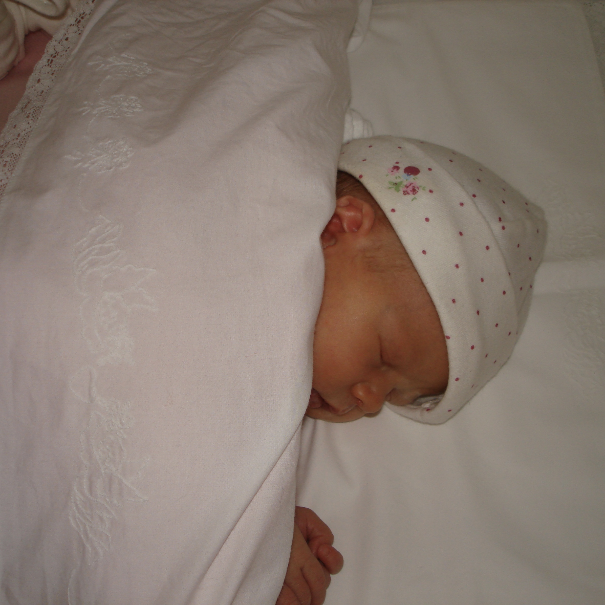
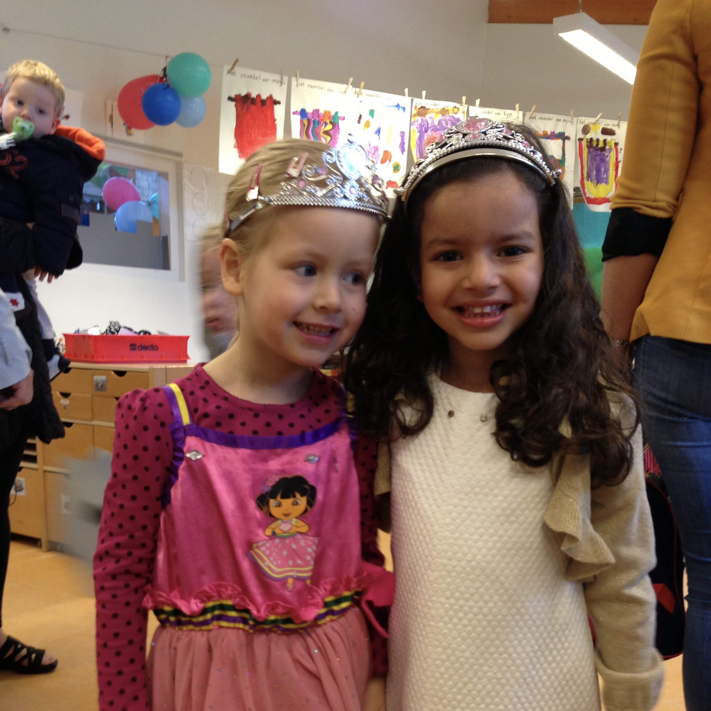
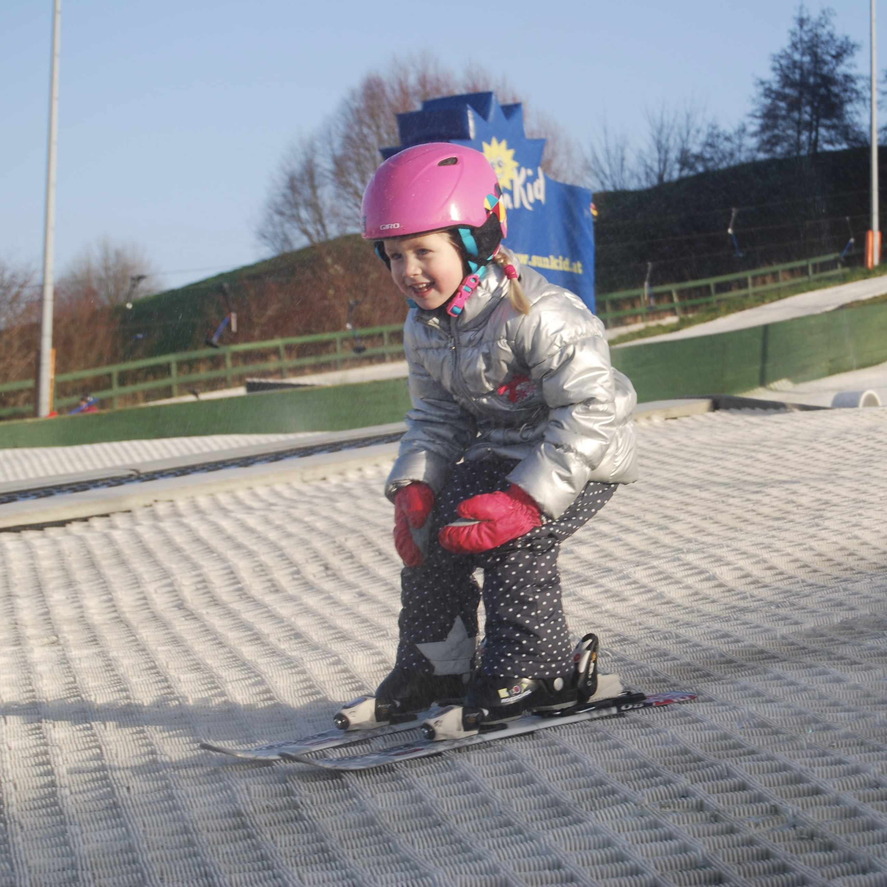
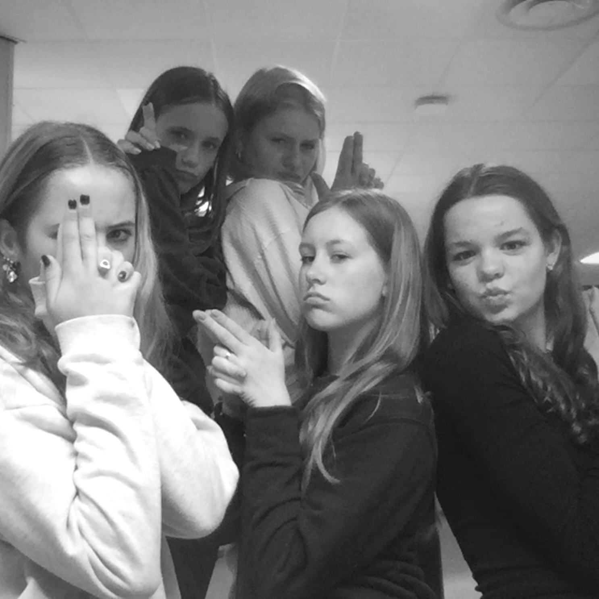
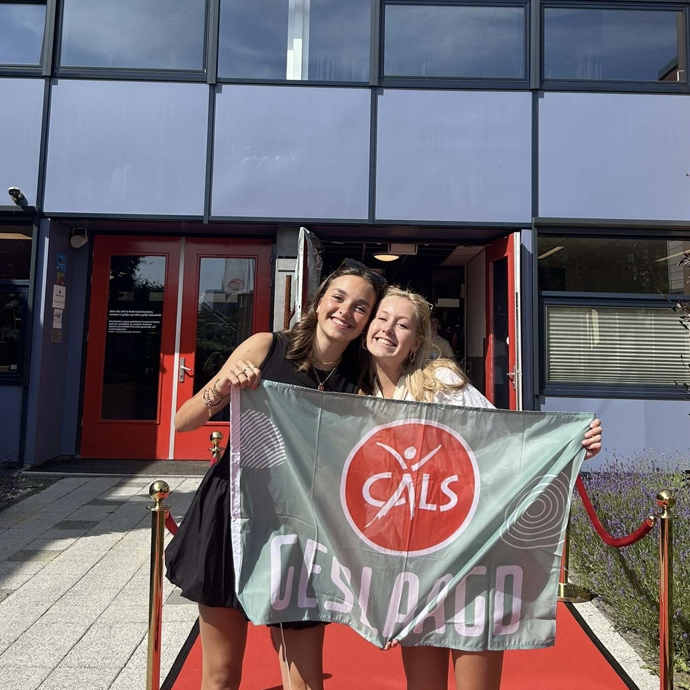
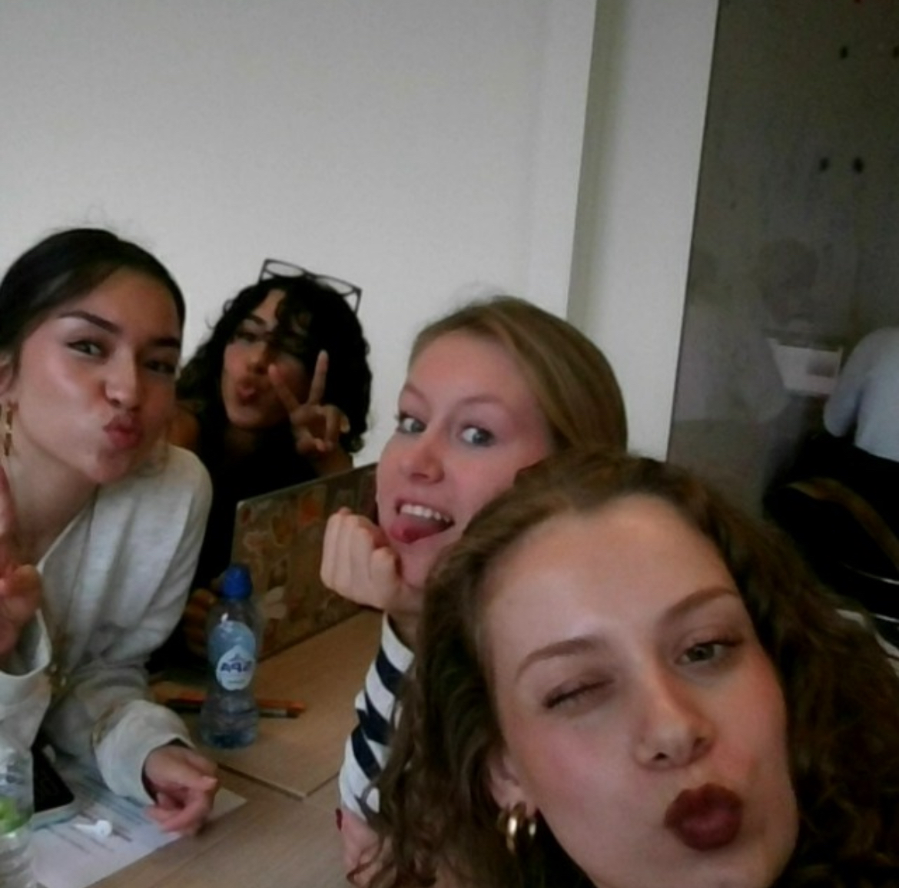
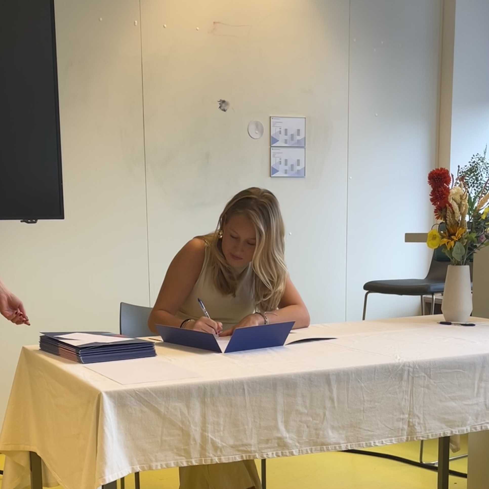

2008 - Mijn geboorte
Op 12 november 2008 werd ik geboren.

Op 12 november 2008 werd ik geboren.

Voor het eerst naar een echte school, de Toonladder

eerste keer op de skilatjes, deze passie is gebleven

Naar de brugklas op het Cals College.

in Juli 2025 ben ik geslaagd voor mijn havo op het Cals college nieuwegein

in september 2025 ben ik begonnen aan de studie comminicatie en multi media design aan de hva

Het eerste jaar van CMD zat erop en heb hem goed bepaald met een mooie propedeuse